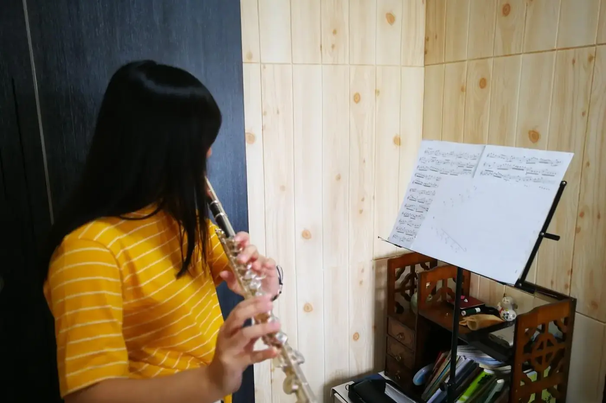

長笛高音刺耳，先查嘴唇和下巴是否太緊；低音反應慢，要同時看氣流方向和按鍵密合；跨音區跳音程，就把距離縮小，讓耳朵先聽見目的地。三處都不適合只靠加大力氣解決。

聲音不對時，先別急着換樂器，也別只說「不好聽」。分開聽音頭、音中和收音，找出聲音在哪一刻變差。說得出問題，回家才做得對。
高音刺耳先查嘴唇與下巴
高音容易尖、緊、飄，吹久了喉嚨也累。別只把問題歸作氣太多。
先檢查嘴唇和下巴有沒有過度緊張，減少下巴的壓力，再用小音量找集中的風線。
揀一個已能舒服發聲的中高音，用連奏向上走一步，再返回原音。聽上行時音量有沒有突然跳大，回來時嘴形是否仍自然。
某個音要用很大的動作才響，先請老師檢查氣流、口型和指法的配合。
單音穩了，才放回跳進或快速樂句。一加速度便失控，就縮小段落，讓手指和氣流有時間配合。
高音的存在感不單靠響度，也靠音頭乾淨、音準穩定，以及它和前後樂句的關係。
低音反應慢，原因在哪裏？
低音出聲慢、漏氣，樂句開頭就不穩。可能與氣流方向有關，也可能是按鍵密合的問題。
用更大的氣量補救，通常只換來更響，低音的中心還是沒有出來。
先放鬆口腔，用較慢的風速，配合按鍵同步，在容易的低音上比較不同起音。
有一個方法可以分辨：先吹容易的中低音，連到目標低音，再比較連奏和直接起音。
- 連下去容易，直接起音總是漏掉：集中處理音頭
- 兩種都反應遲緩：要同時留意封鍵和樂器狀況，請老師協助檢查
音頭吹清楚了，再延長音值，讓低音有中心。
跨音區跳音程怎樣練？
低音到高音之間，譜上只有一個跳進，身體卻像要重新開始。手指移動、氣流調整和嘴唇的細微變化，要在同一刻相遇。
只盯着高音成不成功，低音往往被匆忙帶過。前一個音沒有支點，後一個音就只能突然加力。
把起音和目標音分開，確認兩端都能舒服發聲。再用較小的音程連接，聽中間有沒有多出的雜音，然後逐步拉開。每次只改一個距離，不同指法和不同速度不要同時加進來。
練連音時，先在心裏唱目標音，再吹過去。心裏唱可以讓手指和氣流有明確方向，它只是輔助，技巧練習仍然要做。
手指總提得很高，就在不吹奏時輕輕轉換，看多餘動作在哪裏。
用節拍器保持緩慢舒服的拍子，兩個音各吹同樣拍數。留意到第二個音時有沒有提早半步。先練準時間，再縮短音值。
放回樂句之前，先做甚麼？
三個音區練到的東西，都要回到樂句才算數。
高音可以先放在短句末端，減少前面的音符，保留旋律方向。
低音要和上一個音保持相近的質感，聽它有沒有承托句子的重量，不要靠一個特別大的音量把旋律壓停。
跳音程回到作品時，把前一個小節也接上，經得起原來的節奏才算成功。那個高音不再是一道障礙，樂句就走得過去，聲音也不會折成兩段。
常見問題
長笛高音尖，是氣太多嗎？
不一定。先查嘴唇和下巴的緊張，再用小音量相鄰上行比較。動作大才響的音，請老師一併檢查指法和氣流。
低音吹不響，是笛壞了嗎？
未必。比較連奏和直接起音：連奏容易就練音頭，兩種都遲緩才一併查封鍵和樂器狀況。
跳音程可以用力吹過去嗎？
突然加力容易令前一個音沒有支點。縮小距離、慢拍吹足兩個音，再逐步拉開。
今天只揀一個音區，用同一個音比較一次。指法不肯定可以查長笛指法表，跳音程慢練可以開節拍器。懷疑樂器有問題，讀長笛保養的送修部分。